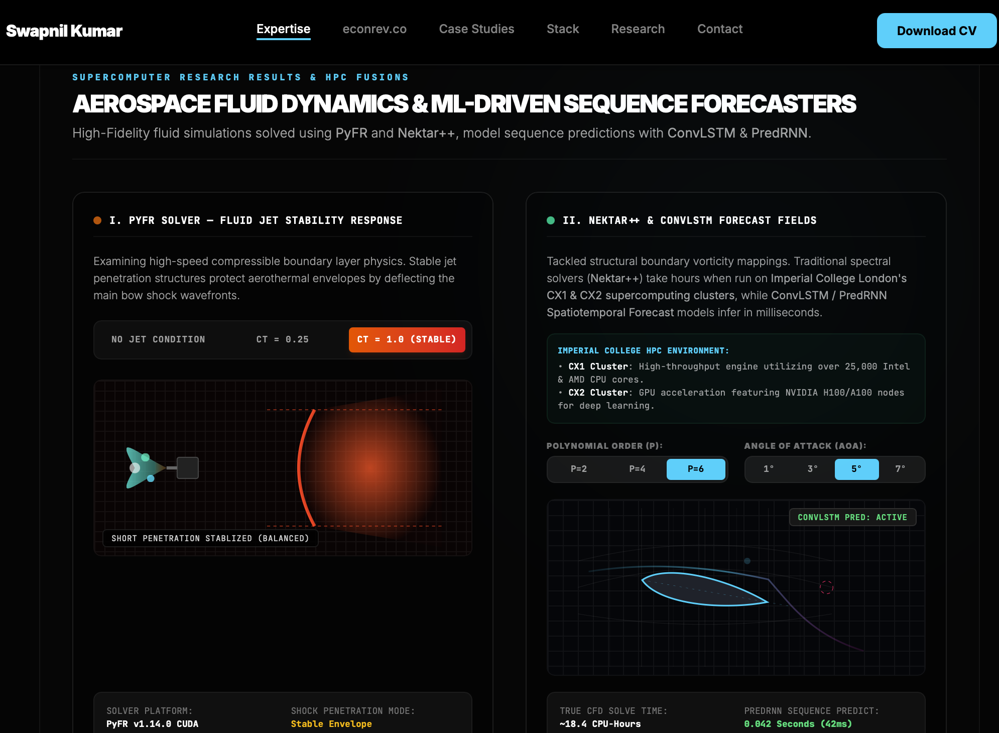
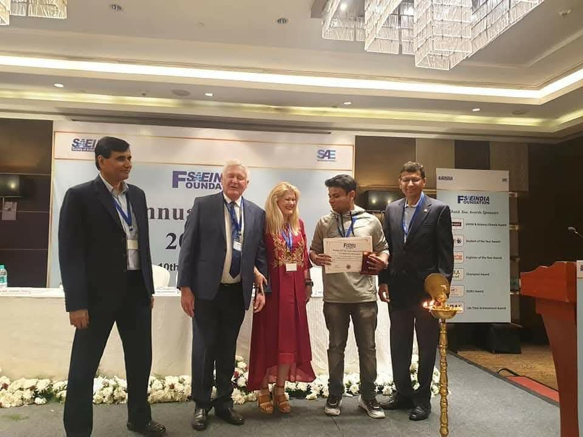
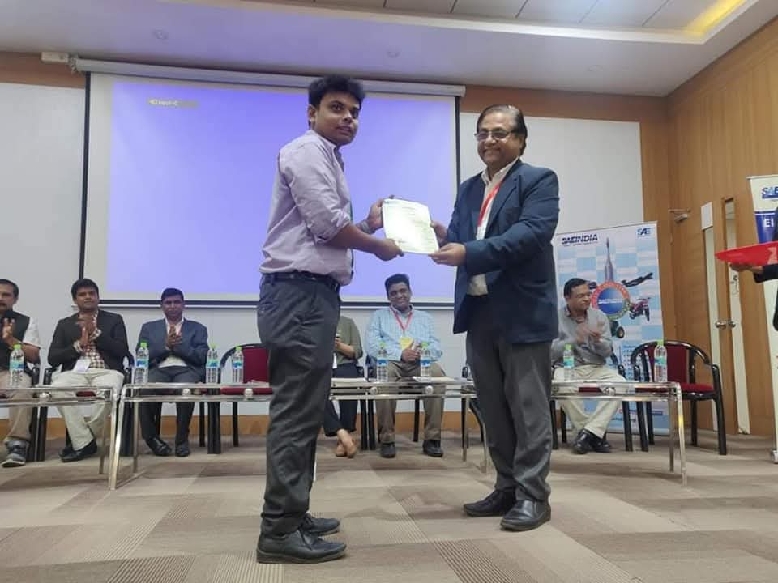

01
Applied LLM systems
RAG pipelines, agentic workflows, semantic vector search and multi-model gateways — built with evaluation frameworks and citation-backed answers rather than demos.
AI/ML Engineer · Researcher · Director
From research to production.
I build production AI systems and the research that underpins them — LLM and RAG applications, semantic retrieval, knowledge graphs, physics-informed models and uncertainty quantification — across industry, healthcare and academia.
2024
Stanford University
Physics-informed and generative ML workflows for physical science and environmental applications on Stanford HPC and Google Cloud TPUs.

Multi-fidelity flow field · Nektar++About
I'm Swapnil Kumar, an AI/ML engineer based in London. I've delivered production AI systems and machine-learning research across industry and academia — building LLM and RAG applications, semantic vector search, knowledge graphs, educational platforms and cloud automation, and leading a ten-person cross-functional team.
My work runs from uncertainty quantification for multi-fidelity simulation at Imperial College London, to coaxial microfluidic bioprinting at Harvard Medical School, to physics-informed and generative machine learning at Stanford, to generative AI and public policy as Technology Director at the MIT Science Policy Review. Today I direct AI strategy and product architecture at XLAB Innovations.
The common thread: taking hard technical problems — high-dimensional uncertainty, regulatory complexity, patient-specific modelling — and turning them into systems people can actually use, with evaluation, governance and traceability built in from the start.
Impact in action
20+
Projects delivered
Manufacturing and machine-learning projects delivered to plan against agreed KPIs.
10
Engineers led
Cross-functional team of AI, data and geospatial engineers taken to delivery.
1M+
Records handled
Large-scale structured and unstructured datasets in production pipelines.
6
Research institutions
Imperial, Harvard Medical School, Stanford, ETH Zürich, Oxford, MIT SPR.
Research
Uncertainty quantification, multi-fidelity deep neural networks, physics-informed learning, quantum machine learning, reinforcement learning and control, microfluidic bioprinting, and spatiotemporal modelling — published across Imperial, Harvard, Stanford and Princeton communities.
See the researchInnovation
AI-assisted organ printing, regulatory intelligence with full auditability, two production education platforms serving personalised revision and automated marking, and unified multi-LLM data platforms — architected, built and deployed.
See the venturesFocus areas
01
RAG pipelines, agentic workflows, semantic vector search and multi-model gateways — built with evaluation frameworks and citation-backed answers rather than demos.
02
Physics-informed neural networks, surrogate modelling, Bayesian optimisation and multi-fidelity data fusion for problems where high-fidelity simulation is too expensive to brute-force.
03
Knowledge graphs that map obligations and dependencies, change-impact assessment, and end-to-end traceability linking every interpretation back to its source document.
04
Coaxial microfluidic bioprinting, patient-specific design for additive manufacturing, finite-element and thermo-mechanical simulation for surgical and implant applications.
05
Model predictive control, reinforcement learning and trajectory optimisation — from torque-vectoring miniature vehicles at ETH Zürich to connected-vehicle stability at Bosch R&D.
06
Graduate teaching at Imperial College London and the University of Oxford across machine learning, generative AI, optimisation, representation learning and AI alignment.
Trajectory
2025 — Present
Director
XLAB Innovations Ltd
Product and technical strategy for AI-assisted organ printing; regulatory intelligence platform with semantic retrieval, knowledge graphs and full auditability.
Feb — Jun 2026
Full-Stack / AI Engineer
A-Team Academy
Built EconRev and Predicted Papers — two production education platforms with personalised revision, automated marking, diagram verification and grade estimation.
2024 — 2026
Technology Director
MIT Science Policy Review
Generative AI at the intersection of evidence synthesis and public policy; published research on equitable and ethical data and AI governance for LLMs.
2024
Machine Learning Specialist, Flame AI Challenge 2024
Stanford University
Physics-informed and generative ML workflows for physical science and environmental applications on Stanford HPC and Google Cloud TPUs.
2022 — 2024
Project Trainee & Research Collaborator
Harvard Medical School
Optimised coaxial microfluidic bioprinting flow conditions, improving structural stability by approximately 30%.
2022 — 2024
Researcher & Graduate Teaching Assistant
Imperial College London
Multi-fidelity deep neural networks for uncertainty propagation; taught machine learning, digital health, optimisation and generative AI.
Sep 2021 — Mar 2022
Consultant
PQE Group
Delivered 20 manufacturing and machine-learning projects, led a ten-member team, and coordinated delivery planning against timeline and KPI targets.
Feb 2020 — Jul 2020
Project Trainee
Robert Bosch R&D
Analysed linear and nonlinear connected-vehicle stability and developed microcontroller logic for coordinated human-driven and autonomous operation.
Milestones
A few highlights from student and professional milestones across engineering and AI events.
 Nova recognition
Nova recognition
SAE Foundation event
SAE certificate ceremonyOpen to research collaborations, technical advisory, and building AI products that hold up in production.